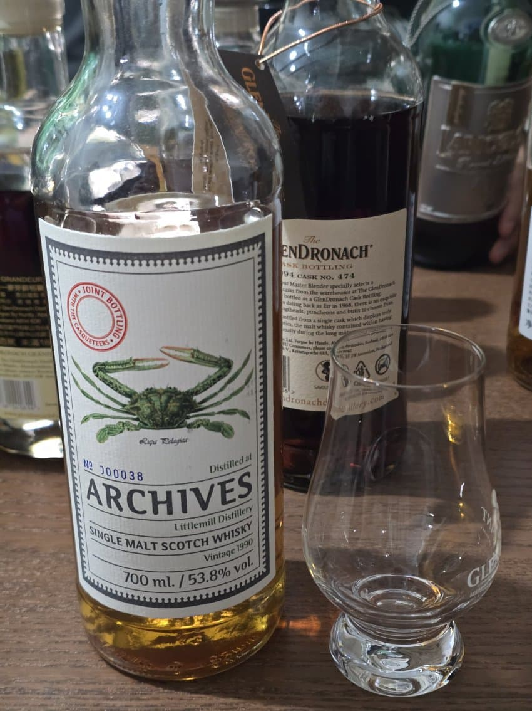
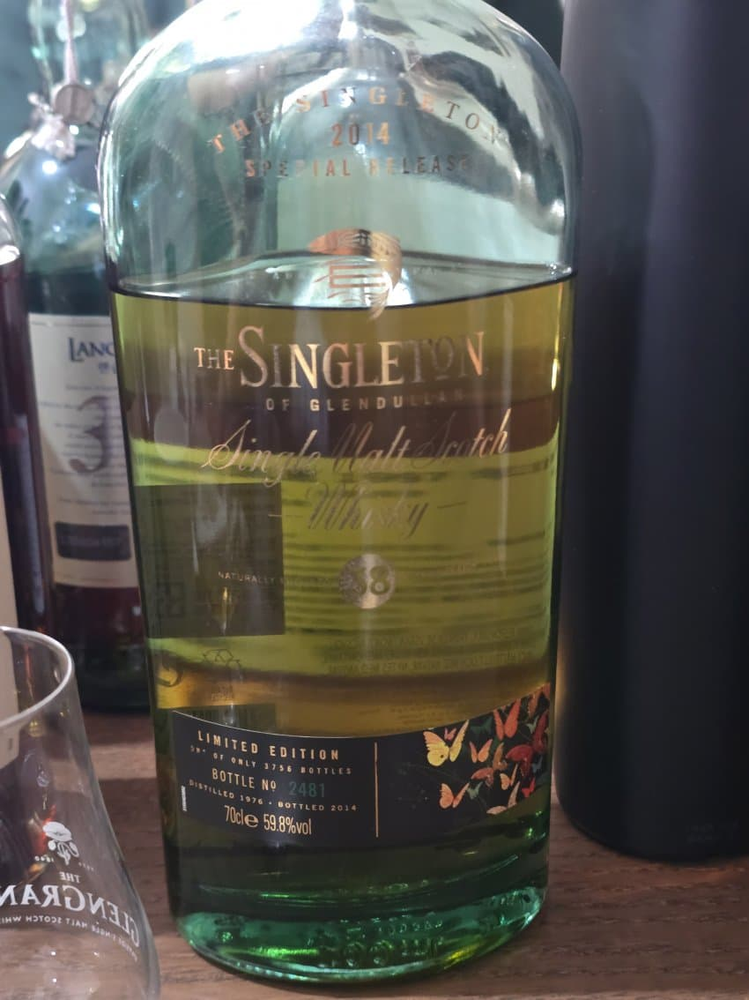

리틀밀
아세톤, 시트러스, 라이, 풀

싱글톤 듈란 38년
아세톤, 청사과, 볼드함, 약간의 우디

듈란 38년의 극하위호환
유산취가 지배적이어따
파클 40년
메탈릭, 셰리, 카라멜리
은은하고 맛낫음 완전 연하지도 않아서 맛낫다
마킬홉스 몰루락
미티함, 꿉꿉함, 산미, 적당한 파우더리, 우디함, 달달함
갠적으로 1등
드로낙 싱캐 28년
그랜저 28년이랑 버티컬했는데 걍 아예 다른술이엇다
px싱캐는 산미있고 굵은 느낌, 그랜저는 밸런스 잘 맞춘 맛도리 셰리 느낌
듀퓨이 그랑상파뉴 vs 쁘띠 상파뉴
그랑) 달고 펑키, 꽃향기, 화사하다
프티) 달고 카라멜리, 우디
잘 모르겠어서 한번더 먹어보려고 바얄 약탈해옴 컄ㅋㅋ
롱몬 1998 gm
향신료, 달고 셰리, 후추
향신료나 후추가 강한 셰리가 취향은 아니지만 밸런스 잡히고 잘 만든 셰리라고 느껴졋다
시크릿아일라(라프) 1991
스모키, 청사과
고숙 느낌 덜나고 피트 잘 살아있는 라프
옥토모어 본 로마네
피트, 약간의 유산취, 적사과
마쉿는 옥돔
보모어 2005 킹스버리
다시마, 가쓰오부시, 약간의 청사과
사실 잘 ㄱ안남..
그외 내 바틀 리뷰는 스킵
센킨 모던 vs 레트로
모던이 좀 더 달고 프루티, 레트로는 좀 더 드라이하고 술 맛이 난다
둘다 개성있게 맛있고 고기와는 레트로가 좀 더 어울리는 기분
히란
프루티, 복숭아, 달달함
아베
깔끔하고.. ㅈㅅ 기억안남 ㅠ
조탈의 뻔
바베큐 걍 고트엿음
김치랑 먹으니 계속 들어감 ㄹㅇ
아침으로 먹은 짜파게티+열라면
남은 소고기랑 비빔
그렇게 먹고도 또들어감 개맛잇음 컄ㅋ
댓글 15개